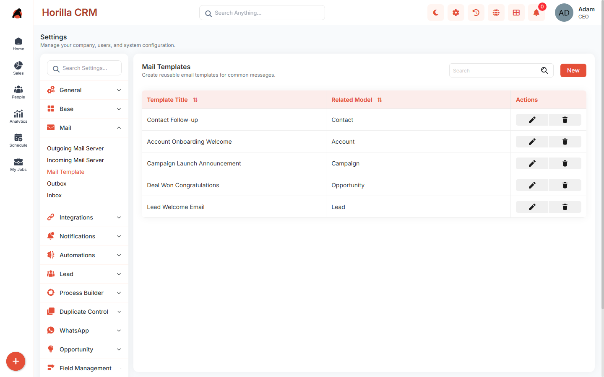
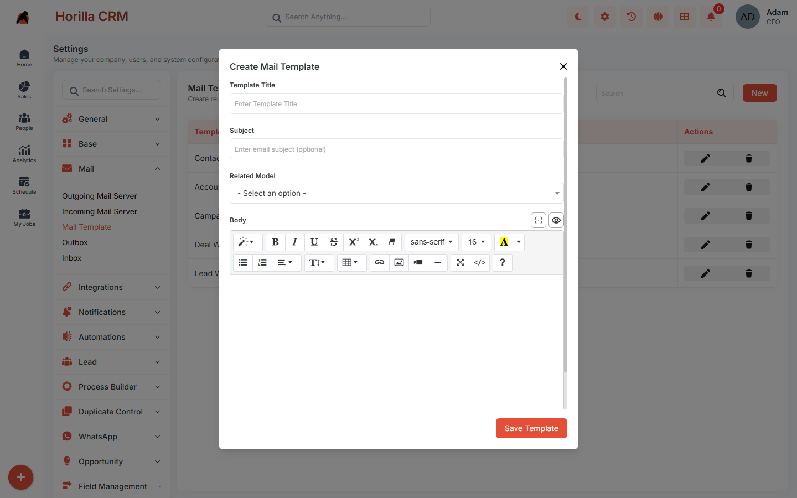
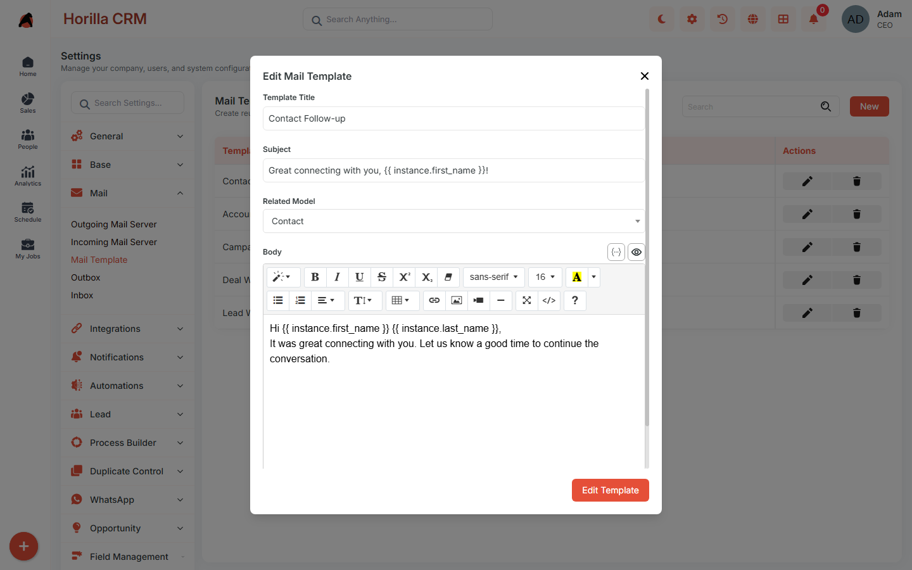
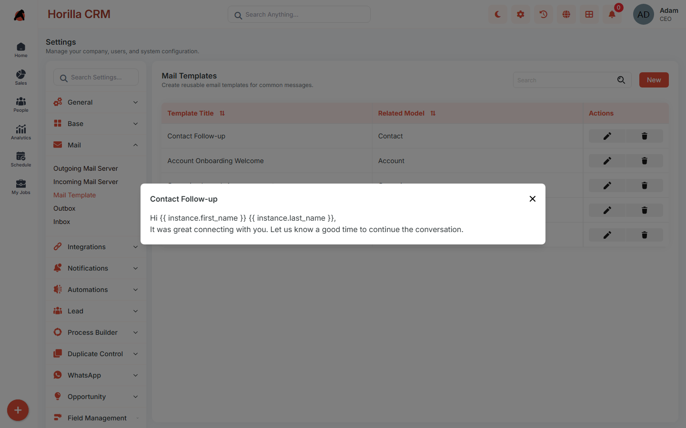

Introduction
The Mail Template module is used to create and manage reusable email templates for CRM records such as Leads, Contacts and Opportunities. Templates supply pre-formatted content so that routine communication can be sent more quickly.
Key Features and Functionalities
1. Mail Templates Overview
Purpose: bring every mail template together in one place for management.
- Navigate to Settings → Mail → Mail Template.
- The list shows the Template title and the Related Model, both of which are sortable, plus an Actions column with Edit and Delete icons.
- A search function helps locate a particular template.
- The New button in the top right creates a template.

2. Creating a New Mail Template
Purpose: build reusable templates for the different CRM entities.
- Click New to open the Create Mail Template modal.
- Complete the form fields described below.
- Click Save Template to finish.

| Field | Description |
|---|---|
| Template title | A descriptive name for the template. |
| Subject | The subject line of the email. |
| Related Model | Optional dropdown identifying the CRM entity type the template belongs to. The options include Lead, Contact and Opportunity among others. |
| Body | A rich text editor with formatting tools for the message content. |
3. Managing Existing Templates
Purpose: edit or delete templates that already exist.
- Edit icon – change the template's content and settings.
- Delete icon – remove the template permanently.

4. Template Detail View (Preview)
Purpose: preview the template as it will be rendered.
- Click any template record to open its detail view.
- A modal shows a full visual preview of the template. Template variables are displayed in their placeholder form.
